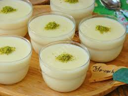

Muhallebi

7 bardak süt
1+1/2 kahve fincanı pirinç unu
1+1/4 bardak toz şekeri
1/2 kahve fincanı nişasta
1+1/4 bardak su
1/2 çay kaşığı tuz
Tarçın
Süt, şeker ve tuz bir tencereye konur ve vakit vakit karıştırılarak orta ısılı ateşte kaynatılır.
Beri yanda nişastayla pirinç ununu bir kaba koymalı. 1+1/4 bardak suyu sicim gibi akıtarak çabuk çabuk karıştırılacak nişastalı pirinç ununa yedirmeli. Sonra bu sulu unu, kaynamakta olan sütü çabuk çabuk karıştırırken sicim gibi ince bir biçimde akıtarak dökmeli.
Karışım boza kıvamına gelinceye kadar pişirmeli. Sonra tencereyi ateşten almalı ve içindekini kâse veya çukur tabaklara bölerek boşaltmalı. Muhallebi iyice soğuduktan sonra üstüne biraz tarçın serperek servis yapmalı.